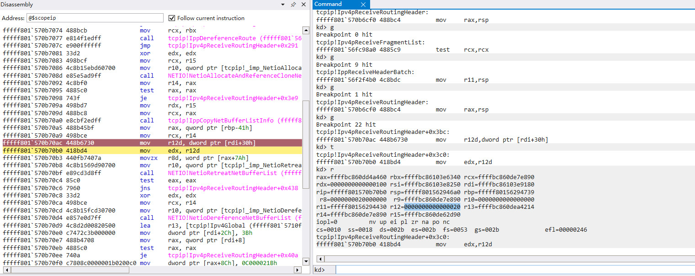

CVE-2021-24074 分享与学习¶
转载请注明出处哦 : )
0x00 前言¶
虽然已经是俩月前的洞了，但是看了一圈国内好像没有关于 CVE-2021-24074 的文章，网上现在好像也只有这一篇 CVE-2021-24074 的分析文章。
这篇文章主要是想分享一下 CVE-2021-24074 的漏洞细节，并根据博客作者的方案写了一个连 poc 都算不上的测试代码。所以如果你只是想找份能用的 poc 的话，那么这篇文章是没法满足你的需求的，贴上来的代码也没啥卵用。而如果你正打算分析该漏洞的话，这篇文章应该能对你有一点小帮助吧，或许对你理解 CVE-2021-24086 的细节也能有所帮助（我没有去看这个 IPv6 的洞，但是一开始接收数据包的函数栈应该是一样的）
本篇文章基于 armis 公司的文章展开，并添加了详细的细节和自己的一些理解。
0x01 逆向与函数执行流¶
拿到一个新的漏洞按理来说应该从补丁入手，bindiff 一下看看补丁打在哪，再去分析为什么打这个补丁以及之前的漏洞在哪。不过既然都有前人栽树了就可以省去大量的分析时间。
这次的漏洞出在处理网络数据包的 tcpip.sys 驱动中，与处理分片数据包和处理带有 route option 可选头的数据包的函数有关。漏洞产生的原因是因为在转发带有 route option 的分片数据包时，关于 option 的一些信息，比如 route option offset in IP header，来自于最后一个分片。而结合后的数据包的数据，也就是要转发时用的数据，是来自于第一个分片的 buffer 空间的。这种不一致就会导致潜在的漏洞危害。
首先看看函数栈，先随便发一个正常的数据包
tcpip.sys 驱动更底层的驱动是 ndis.sys，这个驱动和网卡相关联，不过对于这个漏洞来说没必要跟它的细节，所以可以直接把它看成是透明的。只要是接收到 IP 数据包，都会有这么一个函数栈，从 IppReceiveHeaderBatch 开始对数据包进行预处理，然后分别调用不同的函数进行处理。
前置知识¶
在开始看函数之前先看一下微软的文档
第二列可以选择性地无视掉。在这个图中指出，数据包是由 3 个结构串起来的，_NET_BUFFER_LIST 的第一个成员是 next，形成一个 _NET_BUFFER_LIST 的链表，第二个成员是 FirstNetBuffer，指向该 _NET_BUFFER_LIST 携带的 _NET_BUFFER 结构。_NET_BUFFER 描述了数据包的相关信息，由 _MDL 真正指向数据包的 buffer 空间。一般来说，一个 _NET_BUFFER_LIST 只携带一个 _NET_BUFFER。比如若有两个分片，那么就会有两个 _NET_BUFFER_LIST，这两个 _NET_BUFFER_LIST 串在一起，每个 _NET_BUFFER_LIST 各携带一个 _NET_BUFFER。这三个结构体都可以由 dt 得到，也有对应的文档。
_MDL 结构中的 MappedSystemVa 指向当前 _MDL 的起始地址，由 _NET_BUFFER 中的 CurrentMdlOffset 指向起始数据的位置，也就是说 MappedSystemVa + CurrentMdlOffset 就是数据包的 buffer 空间。
虽然在上图中 _NET_BUFFER_LIST 是第一层，但是在整个网络数据处理流程中，它上面至少还有两层结构。上上层在这次分析中不重要，不过 _NET_BUFFER_LIST 的上层是一个重要的结构，我管它叫 _REASSEMBLE_LIST。_REASSEMBLE_LIST 的第一个成员也是 next，第二个成员指向 _NET_BUFFER_LIST。里面还存放了很多数据包的相关信息，在各个函数执行中经常要用到。
_REASSEMBLE_LIST 这个名字应该不太准确，不过就分析这个漏洞来说还行。关于这个结构体不知道是我没找到它的定义还是真的没有，我把 dt ndis!_* 浏览了一遍没有看到和它对得上的结构体，文档里似乎也没有。这应该是个叫什么 ndis ... list 或者 miniport ... list 这类的结构体，不过搜了 ndis 中的许多定义也没发现对得上的，而且这个结构体很大，是那种接近顶层的结构了。如果这真的是个有定义的已知结构体的话还请教教我 (捂脸
虽然没找到，不过知道了它的宏观结构，然后里面大部分字段都是保存着数据包的相关信息的，所以在跟一个字段的时候还是可以知道它的具体含义的。以下是这个结构体的一小部分字段。
struct _REASSEMBLE_LIST { _REASSEMBLE_LIST *next; _NET_BUFFER_LIST *NetBufferList; char unknow0[28]; unsigned int functionToCall; unsigned int headersize; char unknow1[188]; unsigned int OriDst; char unknow2[12]; unsigned int IPSrc; char unknow3[12]; IPHeader *IpPacketBuffer; char unknow4[24]; unsigned __int8 RouteOptionOffsetInIpHeader; unsigned __int8 RouteOptionSize; ... };
知道了结构体的构成与宏观的组织，接下来就是函数的执行流了。
函数的执行流¶
与漏洞相关的函数有
IppReceiveHeaderBatch: 对数据包进行预处理，然后根据数据包的类型调用不同的函数进行处理
Ipv4pReceiveFragmentList: 对分片数据包进行处理
Ipv4pReceiveRoutingHeader: 对包含 route option 的数据包进行处理
当发送一个正常的包含 route option 的分片数据包时，如使用 ping 192.168.126.128 -l 1600 -j 192.168.126.128 -n 1 时，执行的函数栈为：
- IppReceiveHeaderBatch
- Ipv4pReceiveRoutingHeader
就这样而已，这说明 Ipv4pReceiveRoutingHeader 这个函数是可以直接处理 route option 分片的。
当发送的数据不一致时，这里以 armis 的方案为例，两个分片不一致，第一个分片携带了 IPSec option，第二个分片携带 route option，此时的执行流为：
- IppReceiveHeadersHelper
- IppReceiveHeadersHelper
- Ipv4pReceiveFragmentList
- Ipv4pReceiveRoutingHeader
- Ipv4pReceiveFragmentList
- IppReceiveHeadersHelper
- Ipv4pReceiveRoutingHeader
这里用 IppReceiveHeaderBatch 中的函数 IppReceiveHeadersHelper 来表示，因为该函数的调用次数可以表示分片的数量，如代码块所示
if ( ReassembleList ) { do { v8 = ReassembleList->next; a3a = (__int64)&a6a; ReassembleList->next = 0i64; IppReceiveHeadersHelper( ReassembleList, Ipv4Global_me, (__int64)&a3a, (__int64)&a4a, (__int64)&v48, a3a); ReassembleList = v8; } while ( v8 ); }
从这个函数执行流中，我们可以大胆地猜测逻辑。
首先调用 Ipv4pReceiveFragmentList 从第一个分片开始处理
Ipv4pReceiveFragmentList 处理第二个分片的时候发现这是一个 route option
然后调用 Ipv4pReceiveRoutingHeader 来处理，但是 Ipv4pReceiveRoutingHeader 又发现这是第二个分片
再次调用 Ipv4pReceiveFragmentList 来处理第二个分片
此时 Ipv4pReceiveFragmentList 开辟了一块新的空间将两个分片组合在了一起
然后调用 IppReceiveHeaderBatch 来处理这个组合后的分片，此时RouteOptionOffsetInIpHeader不为0
所以直接调用 Ipv4pReceiveRoutingHeader 来处理组合后的分片
RouteOptionOffsetInIpHeader 保存在 _REASSEMBLE_LIST，其含义为该数据包是否存在 route option，若有的话其值为 route option 在 IP Header 中的偏移字节，若不存在的话值为 0。
到这里需要用到的知识应该差不多了，有关 route option 的相关知识网上应该挺多的，比如 Linux 的这篇文章。这里顺便提一句，route option 的 ptr 是从 type(第 0 个字节) 开始数的，只不过因为它的初始值为 1，所以一般用的时候都拿 ptr - 1 来用。比如说一开始的 ptr 是 4，指向第一个 route address。
接下来看看漏洞。
0x02 漏洞剖析¶
这个漏洞是一个越界写漏洞，如图所示
ForwardNetBuffer 从组合后的 Net Buffer 复制过来，其头部 buffer 空间与第一个分片相关联。pointer_sub_one（也就是 route option 的 ptr）来自于 buffer 空间，因此与第一个分片相关联，而 ReassembleList 中保存的很多字段都是来自于最后一个分片的，比如 RouteOptionOffsetInIpHeader。因此，ForwardOption 的偏移量是由最后一个分片决定的。
由于这种不一致性，因此导致了潜在的漏洞危害。我们以 armis 提出的方案再来详细地看看这个漏洞
RouteOptionOffsetInIpHeader 来自于最后一个分片，因此 route option 的 offset 为 20 + 4，但是 buffer 空间是来自于第一个分片的，所以 ForwardOption 指向第一个分片的 Byte #3，同理 pointer_sub_one 的值为 5 而不是 4。
OK，搞清楚漏洞的产生原因了，现在我们来看看 armis 提出来的利用方案，这也是我比较怀疑的地方。
Writing 1-byte OOB¶
还是上面那张图，按 armis 的意思，option 的 11 个字节（从 1 开始数）后面的第 12 个字节是可控的 OOB。然而，对于一个正常的数据包来说，IP头需要是 4 字节的倍数，若不够的话就要在最后进行填充。也就是说，这第 12 个字节其实应该是个范围内的地址，而不是 OOB，也就不会造成安全隐患。
我们来看看 ForwardNetBuffer 是怎么来的
要转发的包从重组后的包的空间复制而来。可以看到 Retreat 的头部大小为 IPHeaderWithOptionSize，这个值是包含那个 pad 字节的。从 windbg 中也可以看出来，当我们的两个分片的 option 头为这样时
char optionPacket_1[] = { '\x82', '\x0b', '\x41', '\x41', '\x41', '\x08', '\x05', '\x41', '\xC0', '\xA8', '\x7E', '\x01' // 最后一个字节用来填充 }; char optionPacket_2[] = { '\x01', '\x01', '\x01', '\x01', '\x83', '\x07', '\x08', '\xC0', '\xA8', '\x7E', '\x80', '\x00' };
IPHeaderWithOptionSize 的值为

32 字节。既然是在正常的 Retreat 空间中，那么就不算 OOB，也就不会造成安全隐患才对。
我不知道这里是不是失误，毕竟按这种思想往后挪一个字节就对了。然而，前面也说到，最后一个字节为 pad 字节，按理来说应该填 0x00，不过填成 0x01(nop) 也行，从 0x02 开始数据包就发不出去了，windows 内核应该是认为这是一个错误的数据包。0x00 是个不合法的 IP 地址，比如 192.168.0.3。所以这里其实只有 0x01 这种选项，此时数据包长这样
char optionPacket_1[] = { '\x82', '\x0b', '\x41', '\x41', '\x41', '\x09', '\x06', '\x41', '\x41', '\xC0', '\xA8', '\x01', // 最后一个字节用来填充 };
然而，这样的数据包是过不了 IppRouteToDestinationInternal 的 check 的（受害者IP: 192.168.126.128，攻击者IP: 192.168.126.1，子网掩码: 255.255.255.0），推测原因为不属于同一网段（看到这儿我觉得这个洞的利用不太现实，就没有继续跟了，也没有逆 IppRouteToDestinationInternal，所以是推测）
其次，我们还需要爆破最后一个字节的空间，因为需要保证这个 route address 等于我们的源 IP（也就是攻击者的 IP 地址，虽然可以伪造），这样才能进入转发的流程。这最后一个字节的空间还恰巧不能为 0xff 或 0x00。不过两次数据包存放的地址也不一致，爆破其实也不现实，比如你爆破到 0x02 了，由于现在是另外一个地址，此时的空间为 0x01。当然，如果我们有办法喷射 MDL 空间的话，那这个 check 还是比较容易过的，不过你都有办法喷射 MDL 了，然后拿来过这个洞的 check，那不是本末倒置了吗。
Writing 4-byte OOB¶

再来看看 armis 说的另一种方法（在原文中是先说这种方法的，然后说它不太现实，进而提出 Writing 1-byte OOB 的方案的）。被当成 route option 的第一个分片对应的 len 和 ptr 的位置我们是完全可控的，因此，从理论上来说，我们可以对 ForwardOption 后面 256 个字节空间的任意 4 个字节进行替换（虽然只能替换成受害者的 IP 地址，但结合 dhcp 伪造我们可以控制受害者的 IP 地址的值，至少最后一个字节随便换都能正常运作）。
然而，从上面就可以看到，这更不现实。首先，你要替换的空间原本是存在一些垃圾数据的，你得保证这个垃圾数据是一个合法的 LSRR 数据，不然过不了 IppRouteToDestinationInternal 的 check。可以从上面看到，那样都过不了 check，这里要过 check 有多难。其次，你也得猜或者爆破这个空间的数据以进入转发的流程。
总之，write OOB 的条件非常的苛刻。不过不妨假设下我们能够对 ForwardOption 后面 256 个字节空间的任意 4 个字节进行替换，那么我们若有一个使用 MDL 空间的 UAF 洞或者是分配->替换关键数据->继续执行这样的劫持的话，或许还是能够有不错的效果的。
通告上说这是一个 RCE，若是仅有这个地方存在问题的话，那么个人感觉是很难做到 RCE 的，当然也有很大可能是因为我利用技能太差了（捂脸
结束语¶
这篇文章主要还是出于一个分享与学习的目的，其实并未给出任何有效的代码。
最后附上 idb 文件（ida 7.0）和 Writing 1-byte OOB 的测试代码（retreat空间内的那种情况）
由于是从头开始逆向的，逆向的过程中认知会发生改变，所以里面可能会残留一些一开始的错误认知，而且由于本人水平有限，所以注释和各种变量名都仅作参考，要是感觉哪里很有问题就放心地改掉。跑代码时记得设置 UAC，使用 IP_HDRINCL 选项需要管理员权限。
： )
2021.4.14
本页面的全部内容在 CC BY-NC-SA 3.0 协议之条款下提供